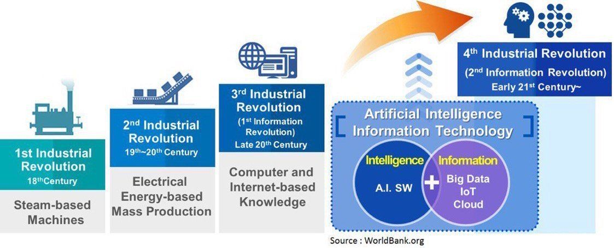
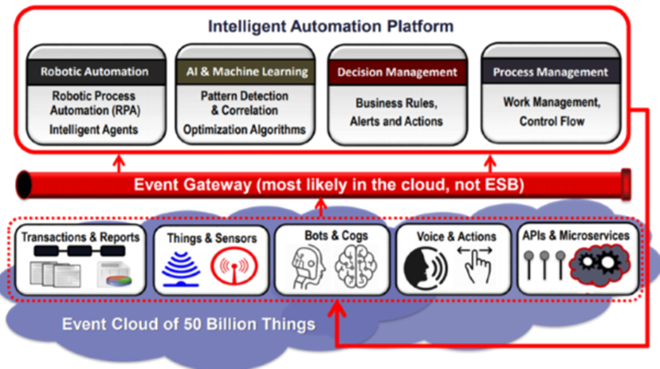
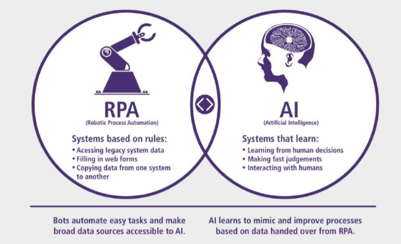
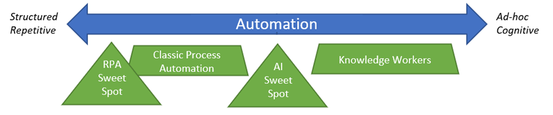
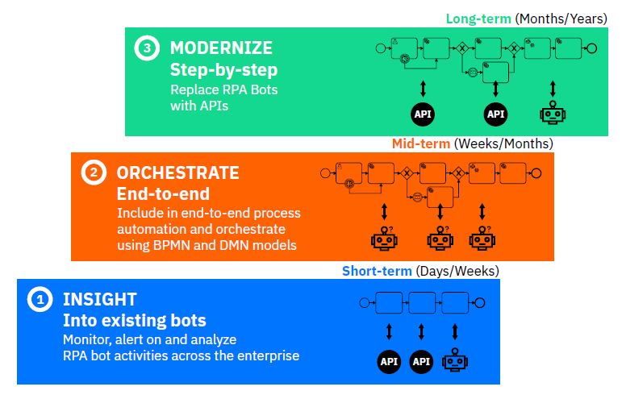
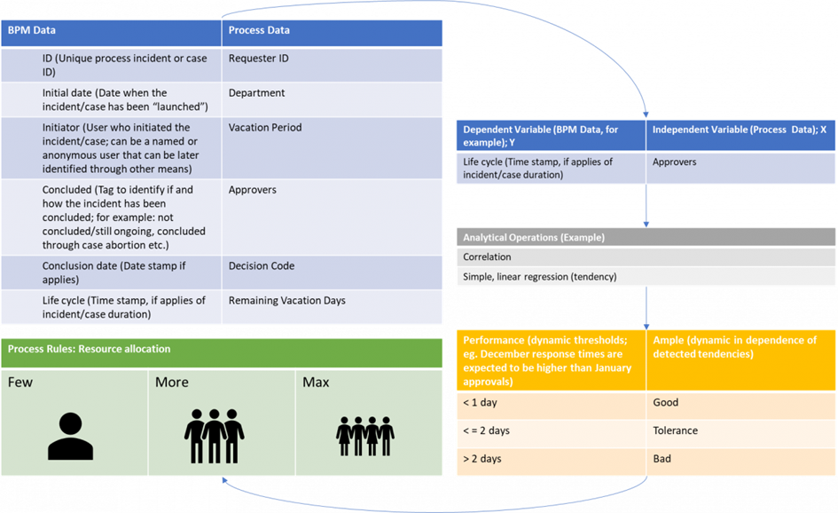
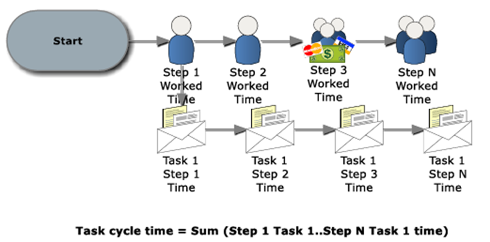
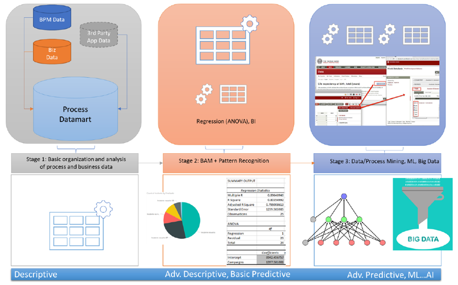
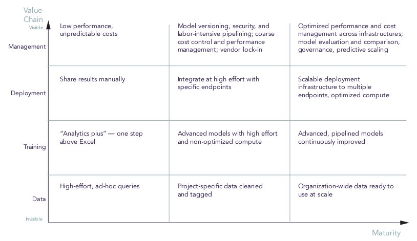

AI and machine learning to crunch the data, RPA, and the introduction of bots for automating swivel chair processes, and more pronounced use of decision management automation. When the titular book was published by Future Strategies, I picked up my copy and started reading in the hopes of figuring out how to implement this. The book is similar in structure to other volumes of Future Strategies in that it is a collection of articles by luminaries in the field, accompanied by several award-winning case studies.
Not that the rise in importance of technologies such as AI should come as a surprise. Going back to 2016 the Artificial Intelligence Information Society as well as the World Bank offered up this infographic showing AI to be considered the 4th industrial revolution to shape our society.

The questions that this new approach tries to answer rise from the underlying mismatch of traditional process automation with the current reality within organizations:
- Process Modelling is still programming and thus does not alleviate the workload of the scarce resource that are developers.
- Office workplaces are no longer so static that they can easily be contained in a process model.
- Case Management Modeling Notation (CMMN) cannot fully answer this dynamic workplace either.
- Processes do not lend themselves naturally to a centralized consistent view of the organization.
- Maintaining the agreement on an agreed-upon process over time is difficult.
Intelligent Automation is one of the latest attempts to efficiently answer digital disruption. This disruption is brought about by new technologies that emerge and upset the balance of any business ecosystem. We need to answer it with a digital transformation of the current landscape in organizations, and intelligent automation aims for this lofty goal by enhancing the traditional business process management discipline with process automation technology, guided by business rules and bots (both RPA and AI). The way to successfully monitor whether the path taken will lead to success is to oversee this process automation with the proper information governance.
Intelligent Automation thus plays on at least four aspects of the organization:
- Adding intelligence to (operational) processes.
- Augmenting decision-making within a process through analytics.
- Monitoring processes for correct operation and adapting them to meet changes in the strategic or tactical direction of the organization.
- Applying intelligent automation and analytics to strategic and tactical decision-making.
The introduction of bots on top of the typical iBPMS is rooted in the idea that human interaction in processes is still needed at certain times, and if our RPA bots can use the same interfaces as their human counterparts, there would be an efficiency gain by alleviated work from knowledge workers and a cost gain by eliminating the need to implement specific interfaces for these bots. It is however imperative that these bots know exactly what to do, and thus the same rules that guide human participants in the process need to apply to these bots. In addition to this, the same level of transparency (such as for audit or privacy purposes) should also apply to the bots. This way correct optimization of the process automation can be determined.
These different components are aptly assembled in Nathaniel Palmer’s vision for future process automation solutions:

The three guiding principles are Rules, Robots, and Relationships. The Robot part of the equation was already tackled earlier in this post. The Relationship part focuses mainly on the data used in the processes. There is a shift here from the problems of storing and replication data locally towards the problems of where to get data in the wide world. The different pieces of the information puzzle could be spread across dozens of repositories all over the world, and although our complete information metamodel still exists, its parts need to be fetched from each of these repositories to complete any sort of 360° view.
Rules are formed by automating decisions and letting AI solutions approach the available information with machine learning to perform both analytical and predictive analyses. This isn’t magic, however, and these AI need to be properly trained using historical data to perform with any level of adequacy. These bots were dubbed probabilistic as opposed to the deterministic nature of RPA bots.
With all these different angles to process automation, it might look like a mire of patchwork islands. But this is where the traditional iBPMS excels, bridging these islands to arrive at an end-to-end process, managing the sequencing, and overseeing the state of running processes. This eventually leads to the promise of intelligent automation: Expanding the efficiency of automation while delivering greater transparency and policy compliance. And herein lies the business value of this proposition. If traditional BPMS automation proves too rigid for the task, consider splitting up the end-to-end process into process fragments to become more flexible. Recreating this end-to-end process from these fragments can be done by structuring them through a case that indicates the major phases in the process. As such these fragments become once again linked, but still retain a dynamic and adaptable nature. This is the intentional process as posited by the people from Flowable.
It is easy to have initiatives for intelligent automation derail, but here we can apply the same lessons we learned for process management adoption:
- Make everyone, on every level, in the organization aware of the benefits and how it will help them in their jobs, not replace them. It alleviates tedious repetitive work and frees up time for employees to pursue more worthwhile endeavors within their organization.
- Think Big, Start Small. It is okay to have a grandiose goal in mind. But starting with a simple proof of concept to show quick results goes a long way to prepare for more complex processes and garner goodwill from those involved.
- If at all possible, get expert help for those first few initiatives to build up expertise within the organization.
- Get intimately acquainted with the data assets available to your processes, in the organization, and external data. What they are, in which format they exist, and their availability. This understanding will facilitate the analytics involved.
ROBOTS
When it comes to robots, RPA springs to mind. But it is not the only game in town. Automation can also be handed over to an AI, which can determine things like the shortest path (think of your GPS) and other non-trivial decisions. The illustration below showcases the most common attributes of both these types of robots.

Taken from the Boston Consulting Group Website
Looking at the work automation spectrum, we can easily pinpoint where RPA and AI can lend a hand to the classic way of process automation. We can also determine where knowledge workers will have the biggest added value. These business experts have accumulated an immeasurable wealth of knowledge and expertise that constantly faces an inevitable expiration date (be it pensions or even turnover). Safeguarding this knowledge through proper knowledge management often is a set of processes on its own to which intelligent automation can once again be applied.

For RPA, the biggest gains will be attained by using the robots as a stepping stone to digital maturity in your process automation. They are tools to be used to quickly replace error-prone human tasks and capitalize on the quick gains this provides. They can also be utilized to quickly set up proof-of-concept endeavors to prove added value derived from ideation. Once these steps in the automated process reach the proper level of maturity, they can then more easily be replaced by technologies that trade in the hyper agility RPA provides for more grip on the governance and maintainability that API solutions offer. Camunda specified a three-step approach along those lines in their 2020 White Paper titled “Beyond RPA: How to Build Toward End-to-End Process Automation”. These steps are the following:

A big part of the added value realized by introducing AI robots into the process automation toolbox is knowing where and when to use them. Predictive models can help decisioning in organizations, but there are some points to keep in mind:
- At its core, effective decisioning should not only answer the “What is Happening?” question, but also the “Why is it happening?”-question. This understanding of the reasons behind information leads to better opportunity detection and initiatives.
- Risk/Reward considerations should be available with each option of the decisions.
- Even with decisions where there are ambiguous or even unknown factors, or where the risk/reward cannot be determined, there is a need to automate, and this is where deep learning/machine learning models can make the difference.
The types of tasks that RPA and AI can alleviate are then:
- Tasks that are easy to do when there are few, but become cumbersome in large amounts.
- Tasks that are not easy for humans to perform, such as high-speed or high-complexity algorithms.
- Tasks that require the interpretation and/or parsing of large amounts of knowledge (such as a volume of laws or a medical database).
Although the degree of independence with which robots can execute these tasks varies widely from case to case. Most of these will still require some human interaction to conclude them. But it is clear that robot-assisted work has a great benefit over not using robots to aid you in performing knowledge work.
The components that can assist in tackling these points are the following:
- Data Integration Agents: These components integrate disparate data sources into a common data repository environment with a focus on cataloging, constructing ontologies, setting up multi-dimensional discovery, domain model creation, and a self-learning data search interface.
- Analytics Agents: These components perform cognitive analysis of available data, correlating and determining data relationships.
- Visualization Agents: As the name suggests, these components allow for the construction of visualizations and support for derived information gathering such as natural language processing, speech recognition, and customer satisfaction analysis.
RULES & RELATIONSHIPS
IT is all about the data. And with the introduction of machine learning, the need for this data to be structured has dropped significantly. Traditional BPM tells us that data/information steers the process. It decides which route is taken through its execution. But with unstructured data in the mix, this becomes a lot harder. As such, interpreting this data correctly has become a science. Data science has become a de facto foundation for every digital transformation effort. When we speak of intelligent business processes, the role data plays has outgrown the classic summaries and reports delivered to the process manager and has taken on the form of the process able to dynamically digest and process an ever-changing data set. This data set needs to combine both the transactional process data and the integration-based business data to leverage results in correct business decisions.
The three data pillars for process data were stipulated in Winkler & Kay’s 2019 article ‘Macro Evolution of BPM Data’, and are the following:
- Historical Process Data
- Run-time Patterns
- AI/ML-based Forecasting
HISTORICAL PROCESS DATA
The obvious data associated with processes is the statistical representation of process behavior (who did what how many times). Combined with the effect of business process results on the ongoing business, it shows a clear route on where to finetune and improve our processes. This is the bread and butter of the process analyst. An example of what this might entail can be seen below:

Business and Process Data analytics example in BPM, Winkler, Kay; 2019
RUN-TIME PATTERNS
Performance metrics add to the previous category of process data. More difficult to determine, these numbers underpin most business cases and justifications for BPM initiatives. They can be leveraged to determine the Return-on-Investment (ROI), and help to pinpoint the bottlenecks in known business processes.

Task Cycle Time; Winkler, Kay; 2019
AI/ML-BASED FORECASTING
Applying Machine Learning to process data is not undertaken lightly. It requires a certain level of maturity in both historical process data and run-time patterns before attempting to extract actionable intelligence this way. The payout is worth the while, even with the sometimes overwhelming amount of data and information to sift through. Gathering all the information avenues into a dedicated repository gives the option for broader correlational analytics (such as time series and cross-sectional investigations). Process Mining will amp up your process optimization game and indicate new avenues to explore for such optimizations.

Stages of Process Analytics; Winkler, Kay
If this still does not give the appropriate support for efficiency and effectiveness, applying some frameworks such as Figure of Merit Matrices (FOMM) to increase effectiveness and Resource Allocation, Leveling and Balancing (RALB) to increase efficiency can assist you to achieve the goals your organization has set out.
PUTTING IT ALL TOGETHER
When leveraging all the tools of intelligent automation, there are concerns as to which goals contradict each other. Just like in corporate strategy, you cannot full-out go for both operational excellence (typically by standardizing to a black Ford Model T) and customer intimacy (with a car that is tailor-made to one unique individual), there are trade-offs and balances to be weighed. For automation in general these are:
- Digital Innovation Speed: Accelerated development for automation using the latest tools and techniques.
- Digital Competency Best Practices: Going for controlled automation with proven technologies, frameworks, and best practices.
And just as with corporate strategy, this balance can shift over time, maybe even with more agility. For this, a Center of Excellence (CoE) dedicated to the art of automation is a life boon. If you are curious about how to correctly set up such an entity, look at my review of Roger Tregear’s book “Reimagining Management”. The 7 Enablers approach in this book will give you a clear path forward on how to achieve this on a corporate level. But on a process level, your considerations are business enablement, continuous review of its performance (for example by applying Lean Six Sigma practices), proper governance, and re-use.
If we map the benefits to the individual tools and best practices we get the following conclusions:
- Classic iBPMS combined with RPA will give us the tools to streamline processes, enable straight-through processing, and frees up time from knowledge workers that can be spent on more value-adding and less repetitive activities.
- AI allows for skill-based routing, faster response times to customers in straightforward requests, and support for decisioning (next best step analysis).
- As expected re-use and standardization help with cost reduction while still allowing specialization in those areas that benefit the most from customization and variety in possibilities.
- Cloud adoption will assist in covering security concerns and redundancy needs to ensure business continuity. It also allows for closer matching of IT resources to the consumption of these services, so that financial gains can be achieved in this way (much in the same way as re-use and standardization would).
PITFALLS OF INTELLIGENT AUTOMATION
There are also risks associated with any architectural trade-off. Here we will list some of the pitfalls the case studies in the book mention. These should be detected when present in these types of projects and proper mitigations should be devised.
- The obvious one for each of these types of initiatives: Think big, but start small!
- Process Automation should never be an IT story, but should be embraced by business people as well to have it be successful. All parties involved should work towards continuous improvement. This includes upper management. A business sponsor for these initiatives should bridge the gap on this account.
- Connections make up the brunt of the complexity associated with IT initiatives. Make sure your solutions are robust and can deal with connections not always available.
- You should not automate processes without the proper control and measuring tools to follow them up. Working in the dark leaves you blind to problems and opportunities for improvement.
- Don’t try to come up with a better wheel. ‘Search for a Commercial-off-the-Shelf component before you Automate’ should be a mantra in process thinking.
- Don’t try to create complete comprehensive processes from the beginning. You won’t be able to capture all requirements in the first iteration. Build your solution for adaptability to embrace new requirements as they become known.
The main realization to make is to determine the maturity of your organization in four distinct areas: data, training, deployment, and management. In each of these areas, an increase in maturity will yield additional benefits as shown in the table below:

CONCLUSION
The book focuses much of its content on the analytics and data sciences part of the intelligent automation ecosystem. While this gives the reader insights into how this field plays an important role, it left me with an unsatisfied hunger with regard to all other disciplines that are in play when attempting the initiatives needed to successfully roll out intelligent automation adoption in organizations.
Would you like to leave a comment?